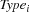
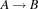

8.4 Example: Bin Packing
This example features a nontrivial model involving reified constraints, a three-dimensional distribution strategy optimizing a cost function, and nontrivial defined constraints. The script will employ explicit thread creations to prevent blocking. To optimize performance, the script will implement certain implicative constraints with conditionals rather than reified constraints.
Problem Specification
Given a supply of components and bins of different types, compile a packing lists such that a minimal number of bins is used and given constraints on the contents of bins are satisfied.
In our example, there are 3 types of bins and 5 types of components. The bin types are red, blue, and green. The component types are glass, plastic, steel, wood, and copper.
The following constraints must hold for the contents of bins:
Capacity constraints:
Red bins can take at most 3 components, and at most 1 component of type wood.
Blue bins can take exactly 1 component.
Green bins can take at most 4 components, and at most 2 components of type wood.
Containment constraints (what can go into what):
Red bins can contain glass, wood, and copper.
Blue bins can contain glass, steel, and copper.
Green bins can contain plastic, wood, and copper.
Requirement and exclusion constraints applying to all bin types:
Wood requires plastic.
Glass excludes copper.
Copper excludes plastic.
Compile a packing list for an order consisting of 1 glass component, 2 plastic components, 1 steel component, 3 wood components, and 2 copper components. The packing list should require as few bins as possible.
Model
One possibility for a model consists in having a variable for every component saying in which bin the component should be packed. The resulting model admits many symmetric solutions and does not lead to a satisfactory script.
We will use a dual model that has variables for bins but not for components. The model has a variable saying how many bins are used to pack the order. The individual bins are then referred to as first, second, and so on bin. For every  we have 6 variables:
we have 6 variables:
 denoting the type of the -th bin.
 denoting the number of glass components to be packed into the -th bin.
denoting the number of glass components to be packed into the -th bin. denoting the number of plastic components to be packed into the -th bin.
denoting the number of plastic components to be packed into the -th bin.denoting the number of steel components to be packed into the -th bin.
 denoting the number of wood components to be packed into the -th bin.
denoting the number of wood components to be packed into the -th bin.denoting the number of copper components to be packed into the -th bin.
Given these variables, the capacity and containment constraints are easy to express. The requirement and exclusion constraints are implications that can be expressed by means of reified constraints.
To reduce the size of the search tree, we exclude some of the symmetries in a packing list. We require that blue bins appear before red bins, and red bins appear before green bins. Moreover, if two consecutive bins have the same type, the first bin must contain at least as many glass components as the second bin.
Distribution Strategy
We will use a three-dimensional distribution strategy. First we distribute on , trying smaller values first. Then we distribute on the type variables  with a naive strategy trying the values blue, red and green in this order. Finally, after the number and types of bins are determined, we distribute on the capacity variables
with a naive strategy trying the values blue, red and green in this order. Finally, after the number and types of bins are determined, we distribute on the capacity variables
with the standard first-fail strategy.
Script
fun {BinPacking Order}<Definition of IsBin>
ComponentTypes = [glass plastic steel wood copper]
MaxBinCapacity = 4
in
proc {$ PackList}
{IsPackList PackList}
{Match PackList Order}
{Distribute PackList}
end
end
Figure 8.3: A script for the Bin Packing Problem.
The script is shown in Figure 8.3. It takes as parameter the order for which a packing list is to be compiled. The statement
{Browse
{SearchOne
{BinPacking
order(glass:2 plastic:4 steel:3 wood:6 copper:4)}}}
will compute a packing list for the order that was given in the problem specification:
[ b(copper:0 glass:0 plastic:0 steel:1 type:0 wood:0)
b(copper:0 glass:0 plastic:0 steel:1 type:0 wood:0)
b(copper:0 glass:0 plastic:0 steel:1 type:0 wood:0)
b(copper:0 glass:2 plastic:0 steel:0 type:1 wood:0)
b(copper:4 glass:0 plastic:0 steel:0 type:2 wood:0)
b(copper:0 glass:0 plastic:1 steel:0 type:2 wood:2)
b(copper:0 glass:0 plastic:1 steel:0 type:2 wood:2)
b(copper:0 glass:0 plastic:2 steel:0 type:2 wood:2) ]
From the printout we can see that the script represents a packing list as a list of packed bins. The types of the bins are coded as numbers, where 0 is blue, 1 is red, and 2 is green. The packed bin
b(copper:0 glass:0 plastic:1 steel:0 type:2 wood:2)has type green and contains 1 plastic and 2 wood components.
The procedure {BinPacking Order} introduces three defined constraints IsBin, IsPackList, and Match. It also defines a procedure Distribute implementing the distribution strategy. Given these procedures, the script itself is straightforward.
IsBin
The definition of the procedure {IsBin Bin} appears in Figure 8.4. It imposes constraints saying that Bin is a consistently packed bin. In fact, the procedure {IsBin Bin} implements all the capacity, containment, requirement, and exclusion constraints of the problem specification. The thread creation at the end of the procedure is needed so that the conditional does not block on the determination of Type.
- <Definition of IsBin>=
proc {IsBin Bin}
[Blue Red Green] = [0 1 2]
BinTypes = [Blue Red Green]
Capacity = {FD.int [1 3 4]} % capacity of Bin
Type = {FD.int BinTypes} % type of Bin
Components
[Glass Plastic Steel Wood Copper] = Components
in
Bin = b(type:Type glass:Glass plastic:Plastic
steel:Steel wood:Wood copper:Copper)
Components ::: 0#MaxBinCapacity
{FD.sum Components '=<:' Capacity}
{FD.impl Wood>:0 Plastic>:0 1} % wood requires plastic
{FD.impl Glass>:0 Copper=:0 1} % glass excludes copper
{FD.impl Copper>:0 Plastic=:0 1} % copper excludes plastic
thread
case Type
of !Red then Capacity=3 Plastic=0 Steel=0 Wood=<:1
[] !Blue then Capacity=1 Plastic=0 Wood=0
[] !Green then Capacity=4 Glass = 0 Steel=0 Wood=<:2
end
end
end
Figure 8.4: The defined constraint IsBin.
implementing implicative constraints with conditionals
The conditional implements three implicative constraints. Implementing these implicative constraints with reified constraints would be much more expensive. For instance, the statement implementing the first implicative constraint would take the form
{FD.impl Type=:Red
((Capacity=:3) + (Plastic=:0)
+ (Steel=:0) + (Wood=<:1) =: 4)
1}and thus create 7 propagators. In contrast, the implementation of all three implicative constraints with a single conditional creates at most one propagator.
The reified implementation {FD.impl A B 1} of an implication  yields stronger propagation than the conditional implementation
if A==1 then B=1 else B=0 end since it will tell A=0 once B=0 is known. Given our distribution strategy, the backward propagation would not have much effect in our example.
IsPackList
The procedure {IsPackList Xs} (see Figure 8.5) imposes constraints saying that Xs is a consistent packing list ordered as specified in the description of the model. The thread creation prevents IsPackList from blocking on the determination of the list structure of Xs.
- <Definition of IsPackList>=
proc {IsPackList Xs}
thread
{ForAll Xs IsBin}
{ForAllTail Xs % impose order
proc {$ Ys}
case Ys of A|B|_ then
A.type =<: B.type
{FD.impl A.type=:B.type A.glass>=:B.glass 1}
else skip
end
end}
end
end
Figure 8.5: The defined constraint IsPackList for the Bin Packing Problem.
Match
The procedure {Match PackList Order} (see Figure 8.6) imposes constraints saying that the packing list PackList matches the order Order. Once more a thread creation is needed to prevent Match from blocking on the determination of the list structure of PackList.
- <Definition of Match>=
proc {Match PackList Order}
thread
{ForAll ComponentTypes
proc {$ C}
{FD.sum {Map PackList fun {$ B} B.C end} '=:' Order.C}
end}
end
end
Figure 8.6: The defined constraint Match for the Bin Packing Problem.
Distribute
The procedure {Distribute PackList} implements the distribution strategy (see Figure 8.7). It first computes a lower bound min for NbBins and then distributes naively on NbBins. After NbBins is determined, the variables Types and Capacities are constrained to the respective lists. Then the script first distributes on Types and afterwards on Capacities.
- <Definition of Distribute>=
proc {Distribute PackList}
NbComps = {Record.foldR Order Number.'+' 0}
Div = NbComps div MaxBinCapacity
Mod = NbComps mod MaxBinCapacity
Min = if Mod==0 then Div else Div+1 end
NbBins = {FD.int Min#NbComps}
Types
Capacities
in
{FD.distribute naive [NbBins]}
PackList = {MakeList NbBins} % blocks until NbBins is determined
Types = {Map PackList fun {$ B} B.type end}
Capacities = {FoldR PackList
fun {$ Bin Cs}
{FoldR ComponentTypes fun {$ T Ds} Bin.T|Ds end Cs}
end
nil}
{FD.distribute naive Types}
{FD.distribute ff Capacities}
end
Figure 8.7: A distributor for the Bin Packing Problem.
Exercises
Exercise 8.5 (See solution)
The procedure
{IsPackList}employs the statement{FD.impl A.type=:B.type A.glass>=:B.glass 1}to post an implicative constraint. This will create 3 propagators. Implement the implicative constraint with a conditional that creates only 1 propagator.